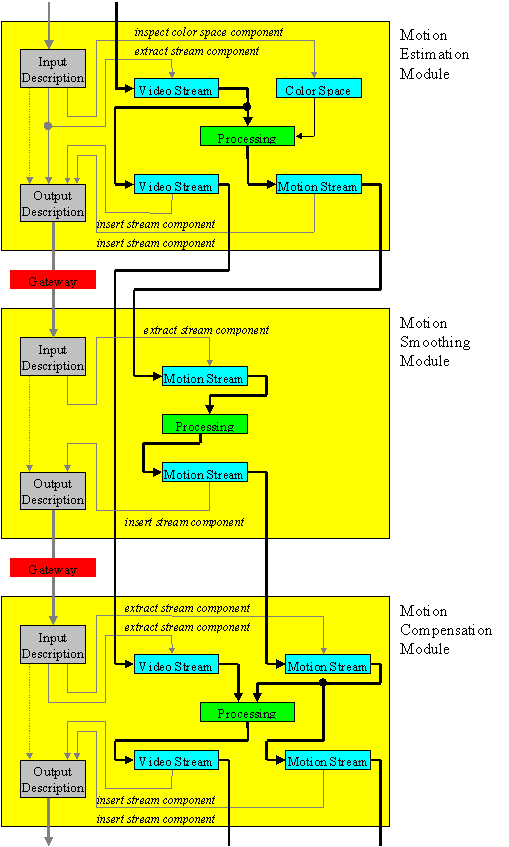

The Media Interface system was originally developed, as the "Image Interface", as a tool for constructing image processing pipelines from independently written processing modules and it continues to be an excellent framework for such applications. It offers tremendous flexibility in image representation and allows arbitrary colour representations, sampling topologies and other important image properties to be specified rigorously. Moreover, the system provides extensive tools for manipulating such complex representations and the Media Interface description-based processing paradigm means that individual module developers need not be aware of any components of the overall image description which are not required by the relevant processing task. To understand how this is possible, the reader is referred to Section III-5. One of the key virtues of the Media Interface system for image processing applications is that relatively few steps need be taken to convert typical prototype programs, which read and write files, into Media Interface processing modules. Of course, to fully exploit the advantages offered by the Media Interface environment, some additional effort is generally required. As a tool for constructing image processing pipelines, the Media Interface framework has proven invaluable for such applications as simulating and processing digital camera imagery, whose complex representations can be substantially more difficult to manage than the image sample data itself.
Since its original incarnation as the "Image Interface", the Media Interface system has been expanded in many ways. The concept of an image is no longer fundamental and has been replaced by the notion of streams, which may be dynamically configured into arbitrary topologies in a natural way, which depends upon the combined processing decisions of all the modules collaborating within a system. Many different types of streaming data structures may be derived from the basic stream component, in order to support compressed data, video, multi-dimensional representations and so forth. Moreover, the addition of a dynamic object model, with built-in interface consistency management isolates the module developer from changes in the implementation or even the structure associated with any of the interfaces exposed by the Media Interface system or by other module developers. Together with the fact that the Media Interface system automatically optimizes resources across all collaborating modules without any need for their intervention, these features make the system a natural choice for many complex applications which must remain stable in the face of changes in the implementation or behaviour of individual components within the system. Examples include multi-media processing, compression, decompression and rendering systems, as well as less obvious applications such as embedded printer processing pipelines. In fact, the Media Interface system makes virtually no assumptions about the underlying operating system on which it relies, except that a multi-threading kernel is assumed. As a result, it should be readily portable to many embedded environments.
Media Interface modules interact across well-defined gateways, through which description objects are passed. Moreover, all components of a Media Interface description are able to externalize themselves. This capability allows Media Interface systems to be transparently distributed across heterogeneous networks of processing elements. In fact, individual nodes in such a network need not have the capability of internalizing any description component with which the local processing modules are not concerned, since components retain their externalized form until they are explicitly requested by a particular module. As a result, the Media Interface system is a natural choice for complex media processing applications whose processing modules may or may not need to reside on separate hosts in a heterogeneous network. Thorough distribution of all Media Interface features, such as system-wide resource optimization, has not yet been implemented; however, isolated distributed applications have been tested in order to prove the concept. Distributing the Media Interface system across a network actually provides an interesting approach to transporting multi-media data across a network, as an alternative to designing complex network protocols to support all possible data types which may arise.
With any new system comes a learning curve and unexpected difficulties which can interfere with productivity. Consequently, it is reasonable to ask why one should take the effort to become familiar with the Media Interface system. Of course, if the goal is indeed to create a large complex multi-media processing system, such as a printing system, then any tool which offers substantial assistance is worth investigating carefully. Most users, however, will be interested in developing their own prototype processing code and leveraging modules developed by others in order to rapidly configure and test a useful system. This section is addressed to these individuals. We attempt here to briefly summarise the key reasons why such users should become familiar with the advantages offered by the Media Interface system.
Towards Environment Independence
Perhaps the most fundamental principle in the Media Interface framework is the distinction between processing modules and their environment. A Media Interface processing module has a well-defined set of input and output gateways and may modify its processing in response to a well-defined set of arguments. Most generally, a module’s environment includes the physical machine, the operating system, the user interaction model (e.g. window-driven versus console-driven, batch versus interactive processing and so forth), as well as the other modules which form part of the same processing system.
One of chief aims of the Media Interface framework is to isolate modules from any dependence on their environment. The motivation for this is as follows:
The mechanisms and paradigms provided by the Media Interface framework to encourage environment independence are briefly outlined in the following subsections.
We begin by considering the lowest level facilities offered by the Media Interface system to isolate modules from their environment. Specifically, we discuss here the dynamic object model which helps to minimize the dependence of individual modules upon the implementation of the Media Interface library and any additional components which are designed to be shared by multiple modules. The Media Interface API consists almost entirely of a collection of object interfaces. The system library defines over fifty standard objects and allows new objects to be defined or derived from existing objects as the need arises. The benefits of Object Oriented Programming have been extolled in many texts and we do not dwell upon them here. It is worth pointing out, however, that not all object models are equally suited to achieving our goal of environment independence. The Media Interface system has its own object model, which might be interpreted as a programming language in its own right; however, the model allows objects to be defined and implemented in any number of different programming languages. We now briefly identify the key features of the Media Interface object model, particularly as these features relate to the goal of environment independence.
Perhaps the most subtle and insidious source of environment dependence arises from the implicit assumptions which multi-media processing modules typically impose on the data which they process. As a very simple example, an image processing algorithm might be designed to accept 8-bit RGB values in the range 0 to 255, convert them to a luminance-chrominance representation and apply a sharpening algorithm to the luminance component only, writing luminance and chrominance values as 8-bit unsigned quantities by introducing an offset of 128 into the signed chrominance samples. Numerous problems are exposed just by this simple example. One might expect to obtain an even sharper image by cascading two copies of this module one after another in an image processing pipeline; however, the result of this operation would be meaningless because the module’s output image does not satisfy its own input assumptions. In fact, for a subsequent module to take advantage of the luminance-chrominance image produced by our sharpening module, it must generally be explicitly informed of the particular luminance-chrominance space adopted (e.g. YUV, YIQ, YCbCr) and the method used to represent signed values in 8-bit quantities. Problems of this form actually occur on a very frequent basis.
Two solutions present themselves to this problem. The first potential solution is to force all modules to conform to a common representation at their inputs and outputs. This solution has a number of undesirable implications: it tightly constrains the colorimetric, sampling and perhaps many other properties of the images which can be represented; it is generally inefficient, since many algorithms may need to perform representation conversion operations on image data at their inputs as well as their outputs; and, the approach is difficult to extend to other media types which may be less well-defined than images. The limitations of the common representation solution are clearly exposed when working with raw digital camera imagery, which typically consists of three or more colour planes, each of which may have a different sampling density and non-overlapping sampling locations.
The alternative solution is to provide powerful tools for accurately describing the interpretation of image and other media data types and to assist in processing these descriptions. In the example given above, our sharpening module could expect to find an accurate description of the colour representation associated with its input image and to provide an accurate description of the colour representation associated with its output image. Using Media Interface utilities, acquisition and manipulation of the image’s colour properties, together with generation and application of an optimized mapping function to convert to the desired luminance-chrominance space could all be performed with a handful of function calls. In this way, the number of representation conversions which must be performed in a complex image processing system is generally minimized. A related but more complex example is discussed in detail in Section II-5. Of course, this image-descriptive approach does not in any way preclude the adoption of a common image representation by certain modules in a processing system.
The Media Interface system encourages a description-based approach for processing all media types, including images. In fact, the sole purpose of the gateways by which processing modules are inter-connected is to serve as conduits for description objects, whose components include both the media streams themselves, as well as related properties such as colour representation and sampling geometry. The principle at the heart of description-based processing is that modules should rely upon the components of the description which they receive, rather than implicit assumptions, to control the way in which they process data and that the descriptions which they send to other modules should be consistent with the processing being performed.
Media Interface modules need not and generally should not examine all components in an input description; rather, they should query only those components which are of relevance to the processing task. Moreover, the original description which was received from an input gateway should generally be sent across the module’s output gateway, after modifying or removing only those components which are relevant to the module’s processing task. Modules should ignore components which they are not competent to interpret, allowing them to flow on to a downstream module whose processing may depend upon them. Interestingly, media streams, such as images, video, audio and so forth, are also components of the descriptions which modules receive and send across their input and output gateways. This means that processing modules can and often do ignore one or more data streams which are not directly relevant to their processing task. The implications of this in terms of the dynamic construction and management of the overall data communication topology are discussed further in Section I-4.2.
Before concluding this section, it is worth noting that the individual components within a Media Interface description are active rather than passive objects. In particular, they provide the functionality required to autonomously resolve dependency conflicts which may arise when a module modifies or removes one component of a description while ignoring others which might be affected by this change. In this way, the integrity of the description can be maintained without requiring individual modules to be aware of the complex dependencies which might exist between components, which might not all be relevant to the module’s processing task.
It is not too difficult to see that the overall memory requirements associated with a processing system can depend in a complex manner upon the interaction between the component processing modules. Consider, for example, an MPEG transcoding system consisting of a decoder followed by an encoder. To understand this example, it is sufficient to appreciate the fact that MPEG compressors do not encode the individual frames in linear order; in particular, frame 1 might be encoded first, followed by frames 4, 2, 3, 7, 5, 6, 10, 8, 9 and so on. The decompressor also decodes frames in the same order and must generally buffer up a number of frames in order to produce a linearly ordered video stream for rendering. Of course, if the decoding modules are aware of the fact that the decompressed frames are to be re-encoded immediately, there is no need to linearize the frame order and considerable system resources can be saved. However, there is no way to inform the decoding modules of this fact, without violating our goal of environment-independence, in which modules should be as independent of their environment (including other modules in the system) as possible. In complex multi-media processing systems, the interdependencies between modules in the system can be substantially more complicated than in the simple example above, with correspondingly convoluted implications for system resource optimization.
The Media Interface system tackles the resource optimization problem head on by taking the task of memory allocation at communication boundaries out of the hands of the individual module programmer. The Media Interface system implements a strategy known as deadlock-driven resource optimization, in which the individual modules, operating asynchronously in separate threads of execution, request buffer storage from streams, returning the storage to complete the relevant transaction. All memory is allocated and managed by the stream objects themselves, which efficiently detect impending deadlock events induced by resource dependency conflicts and use these events to allocate the minimum amount of system resources so as to allow the entire processing system to proceed. In many important cases, this scheme is able to dynamically arrive at a condition which minimizes overall system memory utilization, without the direct intervention of any particular module. In the more general case, for arbitrary communication topologies, the scheme is able to avoid deadlock (no mean feat) and generally finds a good heuristic solution to the NP-complete problem of minimizing overall system resources.
The Media Interface approach to minimizing system resources may be contrasted with Microsoft’s Active Movie framework, in which the resource allocation problem is handed off to the individual processing "filters". This has the effect of complicating the programmer’s task by introducing the very real possibility of deadlock. It also makes it very difficult to minimize overall system memory utilization, even when all processing filters in the system are able to be developed together. For more information on Media Interface streams the reader is referred to the discussion in Section I-4.2.
Another important role played by the Media Interface system in facilitating environment independence is to add a level of abstraction to operations which might be dependent on the underlying operating system or the user interaction model (e.g. interactive, batch, embedded, etc.).
Low level examples of this include file I/O, explicit memory allocation, premature termination, delivering error, warning and general purpose text messages and registering exit handlers. The Media Interface system provides function interfaces which implement tasks such as these, while ensuring robustness to premature termination of the relevant module or modules and isolating the module developer from platform-dependent implementation issues. The Media Interface messaging services, for example, abstract issues such as the formatting and rendering of messages sent by modules in response to error or warning conditions or simply in order to report results. The default messaging services may be customised for an interactive user on a windowing platform, for a simple console terminal, for generating log files and so forth, so that individual module developers need not concern themselves with such issues.
A higher level example of the way in which the Media Interface system provides abstract interfaces to system-level functionality may be seen by the way in which arguments are generated and supplied to modules. Each module exports information describing the arguments and parameter types it is prepared to accept in order to customise its behaviour, thereby providing sufficient information to allow appropriate arguments to be acquired interactively, from a command line, or from a database or script, depending upon the relevant user interaction model. The module itself, however, remains completely oblivious to the mechanism used to acquire arguments.
Module Interactions Gateways and Descriptions
Clearly, the interaction between separate processing modules must be tightly regulated in order to realize our goal of environment independence. Specifically, we need to avoid dependence in one module upon assumptions concerning the type of interaction which is supported by another. In fact, barring a few pathological cases, all interaction between modules is initiated by passing descriptions across inter-modular gateways. Each processing module declares the minimum and maximum number of input gateways from which it is prepared to receive descriptions and the minimum and maximum number of output gateways across which it is prepared to send descriptions. Many modules may be interpreted as description filters, with a single input gateway and a single output gateway and we will often assume this simple scenario in the examples presented in this manual; however, there is no requirement that modules be connected as filters in a pipeline configuration.
Modules may send any number of descriptions across an output gateway, so long as a consumer for these descriptions remains. Similarly, modules may continue to receive descriptions from an input gateway, so long as a producer for these descriptions remains. In most cases, however, simple filtering modules will request only a single description from their input gateway, modify this description to reflect the processing which is being performed and then pass this description across the output gateway. Descriptions are Media Interface objects which serve essentially as containers for so-called component objects, which actually constitute the description. Modules manipulate descriptions by accessing existing components, adding new components and removing existing components, in accordance with the processing task at hand; however, they rarely make any attempt to examine and manipulate all components in a description. Instead, they restrict their attention to those components which are of interest, and leave the description object to autonomously manage the integrity of the overall description in the face of changes made by the module.
By way of example, consider a filter module whose role is to extract a single plane from an image. In this case, the module expects only to find an image stream component in the description it receives from its input gateway. Having modified this image stream component in the appropriate way, many other components in the same description may be inadvertently affected, in response to which the description object will automatically resolve inconsistencies as necessary to ensure that the description which is sent across the module’s output gateway is consistent with the actions which were taken. Thus, for example, any colour representation component in the original description will automatically be discarded, since such a component is meaningless with only a single image plane.
If the only mechanism by which modules may communicate with one another is via descriptions which are passed across gateways as discrete objects, one might reasonably inquire as to how the Media Interface system can efficiently be used to process large, potentially unbounded amounts of data. Indeed, it would appear that all such data must be encapsulated in the components of the relevant descriptions, which would imply large, potentially unbounded memory requirements and delay in the processing system. To avoid this difficulty, we define stream components. There are a number of variations on the basic stream component, but the idea is that modules may read from any stream component which they recover from a description received from an input gateway and they may write to any stream component which they create and include in a description sent across an output gateway. In this way, stream components establish another layer of inter-modular connectivity, which is responsible for data communications. The particular stream components which individual modules choose to extract from their input descriptions and include in their output descriptions dynamically determines the communication topology, in a manner which no individual module can control or predict. Interestingly, the connectivity relationships established by streams can easily have a non-pipeline topology, even if all modules in the system are filters whose gateways do form a pipeline topology.
As an example of these concepts, consider a video compression system which includes a motion estimation module, a motion vector smoothing module and a motion compensation module, as illustrated in Figure 1. The motion estimation module might expect to recover a video stream from the description it receives via its input gateway, from which it generates a copy of the video stream and a motion vector stream to be included in the description it passes across its output gateway. The motion vector smoothing module expects to recover a motion vector stream from the description it receives via its input gateway and includes a smoothed motion vector stream in the description which it passes across its output gateway. Finally, the motion compensation module would expect to recover both the video stream and the motion vector stream from the description it receives via its input gateway, including both the motion vector stream and the motion compensated video stream in the description it passes across its output gateway for further processing. Even though all three modules are description filters, with a single input and a single output gateway, connected to form a pipeline, the data communication topology induced by the way in which each module manipulates the descriptions it receives and sends is clearly not a pipeline.
A final form of module interaction arises from the fact that every module must be launched by other module, with the exception of the single environment manager module which is automatically created with each Media Interface environment. Apart from a very small number of tasks which are the exclusive domain of the environment manager, all modules are equally privileged. In particular, any module may launch other modules, creating appropriate input and output gateways for these modules.
CORBA and COM are well known competing standards for building portable and/or distributed systems, using object interfaces to isolate the user (or client) from the implementation of the object. In fact, CORBA and COM interfaces are designed to allow an object’s client and its implementation to be transparently migrated to different nodes in a distributed system or to be written in different computer languages. The goals of these standards are thus related to that of the Media Interface system, in that they seek to maximise independence between separate pieces of a potentially very large system. On the other hand, it is important to appreciate the fact that COM and CORBA address relatively low-level issues relating to control flow across object interfaces, whereas the Media Interface system is primarily concerned with facilitating the development of entire processing modules, which are not only independent of each other’s implementation, but are also independent of each other’s data requirements, communication topology and function in the overall processing system, in so far as this is possible.
The interaction between processing modules in the Media Interface system is so well-defined in terms of gateways, and descriptions whose components are able to externalise themselves and be recovered on demand, that effective distributed systems can be built without resorting to the distributed object models of COM and CORBA. On the other hand, there is no reason why the Media Interface’s own object model cannot be viewed as a "language binding" within COM or CORBA, thereby making the distributed object features of these standards immediately available to systems built within the Media Interface environment. In fact this distributed object approach and the natural Media Interface approach to building distributed systems by passing descriptions across network gateways are quite complementary. The former is best suited to the distribution of complex control-flow, whereas the latter is best suited to distributing media data streams in a meaningful and flexible manner.
HP’s OrbLite framework takes the goal of isolating components in a system from one another one step further by reducing both COM and CORBA to language bindings within a framework which is able to efficiently and flexibly bridge the gap between different interface representations, language implementations and execution models. The Media Interface’s own object model actually shares and borrows many desirable attributes from the OrbLite framework. Examples of such synergy are the self-descriptive properties of Media Interface objects and their ability to dynamically create new interfaces to support changes in interface structure without requiring recompilation. Perhaps the most significant difference between the Media Interface object model and that supported by COM, CORBA and OrbLite is that Media Interface objects offer no native support for anything other than in-process interfaces; if an interface must be distributed across process or platform boundaries, it should be wrapped up as a language binding for one of the aforementioned frameworks, as mentioned above. Media Interface objects must also conform to a much more restrictive Interface Definition Language (IDL) than that supported by COM, CORBA and OrbLite; the restrictions are applied primarily to minimise implementation complexity.
Media Interface objects support single inheritance only, as do COM interfaces, whereas CORBA and OrbLite allow multiple inheritance. This apparent limitation may be largely overcome, however, by the fact that Media Interface objects support dynamic definition, binding and implementation techniques which can be used to add functionality to an existing object without any specific knowledge of the interface structure or derivation history of the object which is being extended. It is also worth pointing out here that COM is essentially a client-side standard in that the interpretation of function overriding, when aggregating separate interfaces to a given object, is the client’s responsibility. On the other hand, within the Media Interface object model, function overriding has a well-defined interpretation which crosses language boundaries and does not involve the object’s users (or clients) in deciding how the interface should be used.
Microsoft is actively driving their Active Movie framework as a standard for dynamically integrating multi-media processing modules, which they refer to as "filters". For this reason, it is worth devoting special attention to comparing and contrasting Active Movie with the Media Interface system, since their target applications overlap. The two systems have the following key features in common:
The two systems differ substantially in the following important respects:
Although the Media Interface is does not assign any special significance to images, as opposed to any other type of media stream, it is easier to find existing image processing frameworks than general multi-media processing frameworks, with which to compare the system.
An obvious candidate for such a comparison is the University of New Mexico’s Khoros system, which has enjoyed some popularity with image processing researchers. Khoros is essentially a graphical tool for connecting modular image processing components to build larger systems. Apart from its emphasis on modularity, the Khoros system shares virtually nothing in common with the Media Interface system. Unlike the Media Interface, image processing modules in the Khoros framework are simply separate programs which interact by reading and writing files. Moreover, the system does not include any of the description-based processing ideas discussed in Section I-3.2, which minimise dependence upon assumptions about the interpretation of the data which will be input and output by each of the modules in the system. On the other hand, Khoros does provide a useful graphical environment for designing image processing systems, whereas the Media Interface system makes no attempt to offer any such thing. It is expected that graphical design environments will grow up around the Media Interface system, but that they should not be a concern of the core system or any of the processing modules.
Another candidate for contrast and comparison is the image processing framework offered by Adobe’s Photoshop package. Again, the intent of Photoshop is substantially different to that of the Media Interface, in that Photoshop is primarily an interactive tool, whereas the Media Interface aims to protect individual processing modules from any concerns regarding the prevalent user interaction model. Apart from specifically interactive modules, most Media Interface processing modules should run equally well in batch or embedded environments as they do in fully embedded environments. One of the ways in which the Media Interface system avoids interactivity issues, for example, is by abstracting the concept of module argument acquisition. To see how effective this is, try entering arguments for new modules via the non-interactive mi_pipe application described in Section II-2.2 and then via the process menu of the interactive WIN32 view module, as described in Section II-2.3. Apart from the issue of interactivity, Photoshop provides a substantially different set of services to developers of image processing modules (also known as "plug-in" modules). "Plug-in" modules must be implemented in a manner which differs significantly from the way in which most standalone programs are written for research purposes, which adds to the development time. Moreover, Photoshop "plug-in" modules must maintain a subservient relationship to the main Photoshop application, whereas Media Interface modules need not serve any particular application and can and often do launch other modules, either within or outside their own thread of execution. Finally, Photoshop does not provide the rich description-based processing environment offered by the Media Interface, along with its simple and powerful tools for describing and manipulating arbitrary colour representations, sampling topologies, illuminant conditions, statistical properties and so forth.< /P>